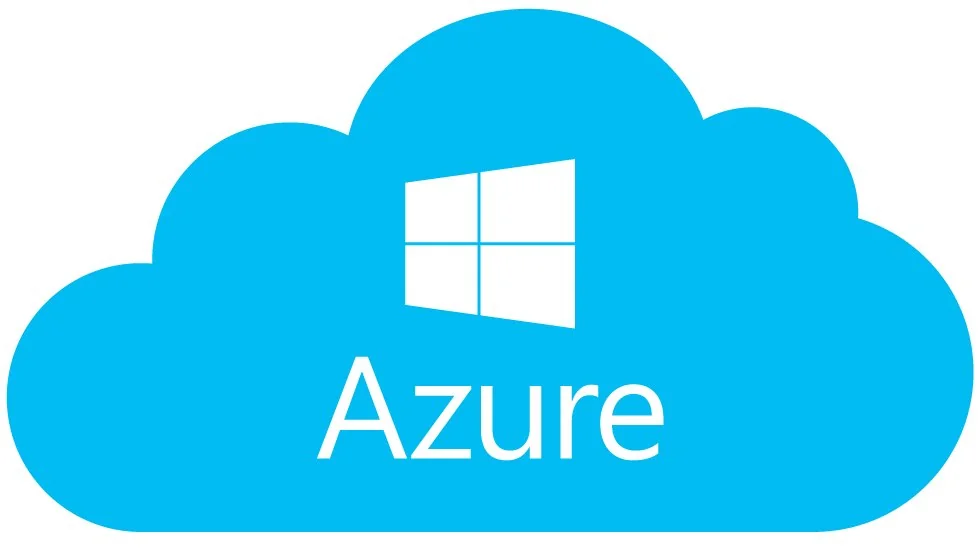

Terraform and it’s role
Terraform is a Infrastructure as Code (IaC) tool that automates the management and provisioning of infrastructure. This infrastructure can be in the cloud or in a private data center. It uses a declarative coding language to describe the desired state of the infrastructure and interacts with your infrastructure provider/vendor via well-defined APIs to make sure your infrastructure matches the desired state in your code.
It is important to understand that Terraform mainly deals with Infrastructure alone. Its not ideal for configuration management. It manages tasks like creating or upgrading the VPCs, S3 Buckets, EC2 Instances, EKS clusters, node groups, etc.
During a cluster upgrade, you might expect it to take care of deprecated API versions too. (If you’re not aware of what these are, go through this article I wrote). But, it won’t. Terraform does not inspect or update the Kubernetes manifests or API objects (like Deployments, Services, or Ingress) running inside the cluster. Handling deprecated API versions within Kubernetes is something that needs to be addressed separately. Here’s what Terraform does for you while upgrading a EKS Cluster:
- Terraform manages the infrastructure provisioning and updates for the EKS control plane and worker nodes.
- When you specify a new Kubernetes version (e.g., 1.24 to 1.25) in Terraform's aws_eks_cluster resource, it upgrades the control plane to that version.
- If you’re using managed node groups, Terraform can also upgrade the nodes by updating the aws_eks_node_group resource with the new version.
The Cluster Upgrade
Upgrading a Kubernetes cluster using Terraform involves modifying the infrastructure definitions to reflect the desired Kubernetes version, applying the changes to the infrastructure, and ensuring a smooth transition without disrupting your workloads. The exact steps depend on the cloud provider or platform you’re using. (e.g., GKE for Google Cloud, EKS for AWS, AKS for Azure, etc.)
Below is a general guide for upgrading a Kubernetes cluster using Terraform with examples for popular platforms like GKE, EKS, and AKS.
General Steps to Upgrade a Kubernetes Cluster with Terraform
1. Review the Current Kubernetes Version
-
Before upgrading, check the current Kubernetes version of your cluster and confirm the version you want to upgrade to is supported by your cloud provider.
2. Update Deprecated APIs
- Scan for deprecated APIs in your Cluster with tools like ‘kubectl deprecations’, ’kubent’ or ‘Pluto’. These tools will list all resources that need updating and the exact API version you need to update to.
- Update the affected resources in your manifests or Helm charts with the new API versions. Here’s an example of upgrading a Deployment:
apiVersion: apps/v1 # from extensions/v1beta1
kind: Deployment
metadata:
name: my-deployment
spec:
replicas: 3
...
kubectl apply -f updated-deployment.yaml
3. Modify Terraform Configuration
- Update the Kubernetes version in the Terraform configuration. (depending on your cloud provider).
- Do this for the control plane first, followed by the managed node groups. Repeat the next 3 steps for managed node groups once again
4. Plan the Changes
-
Run Terraform plan to review the changes before applying them. This helps you verify that the new Kubernetes version is correctly configured.
5. Apply the Changes
-
Apply the Terraform changes to upgrade the cluster.
6. Verify the Upgrade
-
Confirm that the cluster has been upgraded, and ensure all resources are functioning properly after the upgrade.
7. Test and Validate
-
Run a few integration tests or perform workload checks to ensure no issues with the upgraded version.
Runbook for upgrading GKE (Google Kubernetes Engine) with Terraform
Step 1: Modify the Kubernetes Version in Terraform
In GKE, Kubernetes clusters are defined using the google_container_cluster resource. You’ll need to update the min_master_version field and the node_version field to specify the desired version.
resource "google_container_cluster" "primary" {
name = "gke-cluster"
location = "us-central1"
initial_node_count = 3
# Upgrade the Kubernetes version
min_master_version = "1.26.0" # The new Kubernetes version for the master
node_version = "1.26.0" # The new Kubernetes version for nodes
# Other cluster configurations...
}
Step 2: Plan the Changes
Run the terraform plan command to preview the upgrade:
terraform plan
Step 3: Apply the Changes
Once you’re satisfied with the plan, apply the changes to upgrade the cluster:
terraform apply
This will trigger the Kubernetes version upgrade for both the master and the nodes.
Step 4: Verify the Upgrade
After Terraform applies the changes, check the version of your cluster:
gcloud container clusters describe gke-cluster --region us-central1
Runbook for upgrading EKS (Elastic Kubernetes Service) with Terraform
Step 1: Modify the Kubernetes Version in Terraform
In AWS EKS, the Kubernetes version is defined in the aws_eks_cluster resource. Update the version attribute to specify the new Kubernetes version.
resource "aws_eks_cluster" "eks_cluster" {
name = "eks-cluster"
role_arn = aws_iam_role.eks_cluster_role.arn
version = "1.26" # Specify the new Kubernetes version
vpc_config {
subnet_ids = aws_subnet.eks_subnets[*].id
}
# Other cluster configurations...
}
Step 2: Plan the Changes
Run the terraform plan command to preview the upgrade:
terraform plan
Step 3: Apply the Changes
Once you’re satisfied with the plan, apply the changes to upgrade the cluster:
terraform apply
With this, EKS will upgrade the control plane to the new version. However, note that this does not automatically update the worker nodes. You must also upgrade the node groups.
Step 4: Upgrade Node Groups
For managed node groups, update the version attribute of the aws_eks_node_group resource.
resource "aws_eks_node_group" "worker_group" {
cluster_name = aws_eks_cluster.eks_cluster.name
node_group_name = "my-node-group"
node_role_arn = aws_iam_role.worker_role.arn
subnet_ids = aws_subnet.eks_subnets[*].id
instance_types = ["t3.medium"]
scaling_config {
desired_size = 3
max_size = 5
min_size = 1
}
version = "1.26" # New version for worker nodes
}
Once again, apply the changes to upgrade the nodes
terraform apply
Step 5: Verify the Upgrade
Once the upgrade is complete, confirm the version of your EKS cluster:
aws eks describe-cluster --name eks-cluster --query cluster.version --output text

Runbook for upgrading AKS (Azure Kubernetes Service) with Terraform
Step 1: Modify the Kubernetes Version in Terraform
In AKS, the Kubernetes version is defined in the azurerm_kubernetes_cluster resource. Update the kubernetes_version attribute to the desired version.
resource "azurerm_kubernetes_cluster" "aks_cluster" {
name = "aks-cluster"
location = azurerm_resource_group.rg.location
resource_group_name = azurerm_resource_group.rg.name
dns_prefix = "exampleaks"
default_node_pool {
name = "agentpool"
node_count = 3
vm_size = "Standard_DS2_v2"
}
# Upgrade to the desired Kubernetes version
kubernetes_version = "1.26.0"
}
Step 2: Plan the Changes
Run the terraform plan command to preview the upgrade:
terraform plan
Step 3: Apply the Changes
Once you’re satisfied with the plan, apply the changes to upgrade the cluster:
terraform apply
This will trigger the Kubernetes version upgrade for both the master and the nodes.
Step 4: Verify the Upgrade
After the upgrade, verify the new Kubernetes version of the AKS cluster:
az aks show --resource-group myResourceGroup --name aks-cluster --query kubernetesVersion --output table
Best Practices for Kubernetes Upgrades with Terraform
- Backup Configuration: Always take a backup of your current cluster state and configuration before performing any upgrades.>
- Upgrade in Phases: If possible, perform incremental upgrades rather than jumping between several major versions to avoid breaking changes.
- Test in a Staging Environment: Before upgrading production clusters, test the upgrade in a staging environment.
- Monitor the Cluster: During and after the upgrade, monitor the cluster for any issues, especially with workloads or APIs that may be affected by deprecated features.
By following these steps, you can ensure a smooth Kubernetes version upgrade using Terraform.